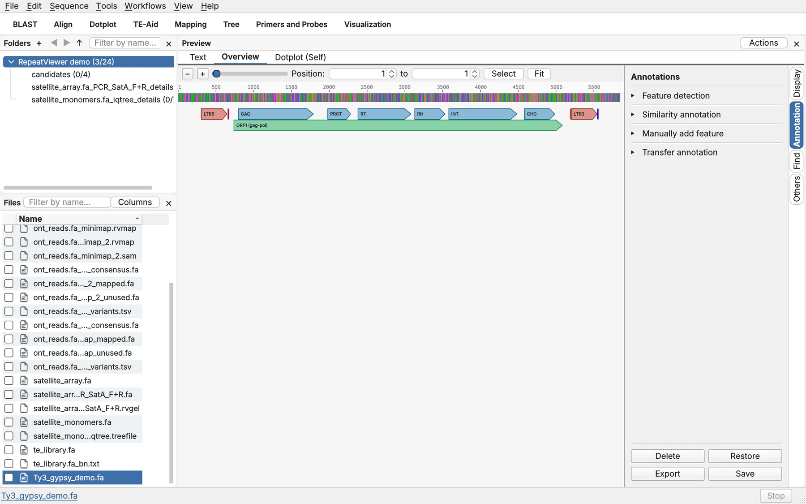
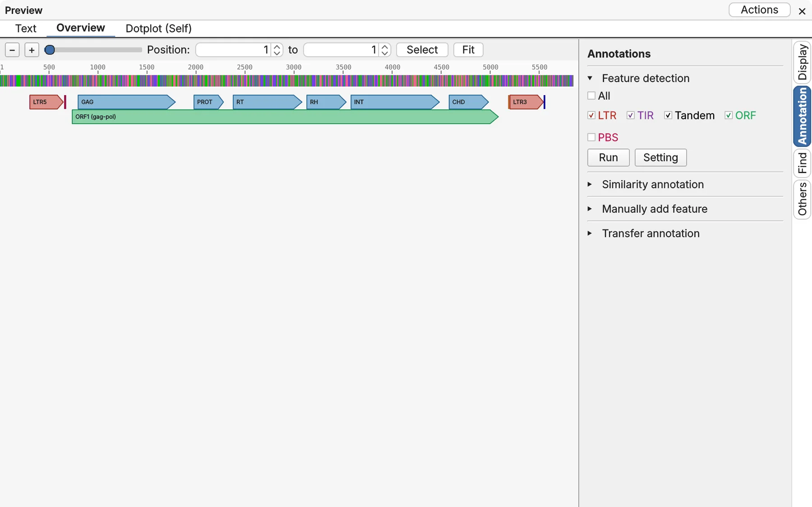
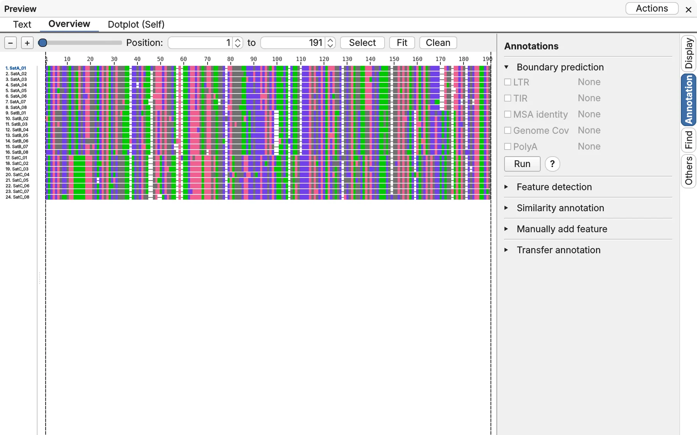
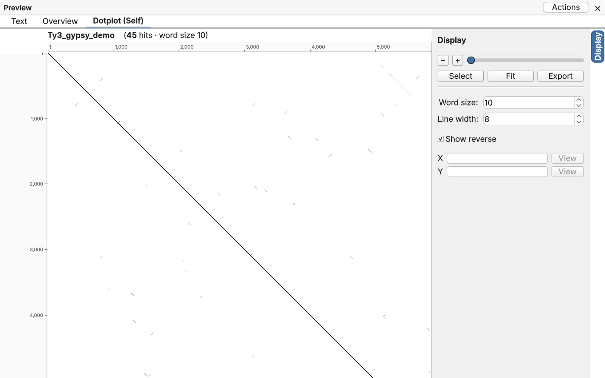

Explore and curate transposable elements in one window.
RepeatViewer is a platform for explorative analysis of repetitive DNA. Open your TE candidates and inspect them further: Annotate, align, trim and plot without leaving the app. Every result lands next to its input, ready for the next step.
Built for the last mile of curation. Built for exploration.
TE discovery pipelines give you candidate consensus sequences that are rarely ready to publish. Boundaries are off, terminal repeats are truncated, alignments carry junk rows. Fixing that is manual and repetitive, so RepeatViewer keeps the whole loop in one place.
- Add a folderDrag your candidates into the Folders panel. Now you can navigate as in a file browser.
- Click a sequenceThe Preview panel shows content as text, as an annotation map and as a dotplot.
- Run a toolBLAST, align, clean, extend or build a consensus from the toolbar. Jobs run in the background.
- Pick up the outputThe result appears in the same folder, highlighted, and becomes the input for the next tool.

See the structure of every candidate
Auto annotation finds terminal repeats, tandem repeats and open reading frames. Similarity annotation adds protein domains from your own databases.
- Detect LTRs, TIRs, tandem repeats and ORFs interactively
- Drag feature edges to fix the boundaries, then save
- Export the annotation as GFF

Copy annotation to related sequences
Curated one TE by hand? Transfer its features to every related sequence. You set the identity and coverage cut-offs, and the matches are drawn as soon as they are found.
- Pick any annotated file as the source
- Tune identity, coverage and strand
- Keep, edit or delete what was transferred
One click to detect more TE copies, align them and clean the alignment
Save a chain of tools as a workflow and run it on any candidate. The built-in BEEA workflow runs BLAST, MSA Extend, MAFFT, MSA Clean, Consensus and TE-Aid in a row, and every intermediate file stays in the folder.
- BLAST against a genome or a pan-genome list
- Align with MAFFT or MUSCLE, then clean and extend
- Keep or drop each intermediate result
Large alignments with the annotations
Scroll through alignments without opening another program. Annotation features and a coverage plot sit above the alignment, so the real boundaries are easy to see.
- Color by nucleotide, conservation or divergence
- Select a region and trim, clean or build a consensus from it
- Coverage track above the rows

A dotplot for every sequence
Every sequence has a dotplot tab. Open an alignment and get one dotplot per copy, side by side, to spot truncated and rearranged sequences at a glance.
- Built-in dotplot for single and multiple sequences
- Interactive Flexidot plots that jump to the matching annotation
- Annotation tracks and sequence boundaries drawn along the middle diagonal

Open almost anything in the Preview
Alignments, PDFs, HTML reports, GFF files, images and plain text all open in the same panel. No more switching between an alignment viewer, a PDF reader, a browser and a text editor.
- FASTA, alignments and GFF annotation
- PDF and image files
- TE-Aid and other HTML reports
From one repetitive DNA to the whole genome
After a TE library is ready, check the TE density along the chromosomes. Analyze TE age.
- TE density along chromosomes, divergence landscapes and abundance
- Repeat Quantify with RepeatMasker or BLASTn
- TE-Aid reports, phylogenetic trees and read mapping
Your parameters, and a record of every run
Every tool opens with its settings, each explained with a help button. Change them, save them as your defaults, or restore the originals. Every command RepeatViewer runs is written to a log that you can open from Preferences.
- Parameters for BLAST, MAFFT, MUSCLE, FastGA, etc.
- Help text next to each option
- Full command lines in the log
Search your own databases
Point RepeatViewer towards a protein, DNA or HMM database once, under Manage Database, and every similarity search will find it.
- Pfam
- Dfam
- REXdb
- Repbase
- CDD
- Your own FASTA
Add your own tools
Add Plugins, add any command-line program as a tool with its own parameter dialog, or write a plugin for anything bigger. Your tools can join workflows like the built-in ones.
Beyond curation
Tools for the questions that come after a TE library is clean: how TEs and other repetitive DNAs are related, what changed between TE copies, and where repeats sit in the genome and along chromosomes.
Phylogenetic trees
IQ-TREE, FastME or FastTree, with an interactive viewer: reroot, collapse and colour clades, switch between rectangular, circular and radial layouts.
Mapping
Place copies, contigs or reads on an annotated TE with minimap2 or HISAT2, and see which features are intact, changed, partial or lost.
Repeat Quantify
Copies, arrays, covered bp and genome share for every family in a satellite DNA library, plus a divergence landscape that shows which satellite DNA families are young and which are old.
FISH images on sequences
Attach FISH or GISH pictures to a sequence or a probe annotation, so each probe's chromosomal location travels with its sequence.
Find in sequence
Search a motif or probe in the open document and step from hit to hit in the annotation view.
Primers and probes
Design primers and FISH probes on the sequence itself, keep them in a shared primer database, and test them before ordering with in-silico PCR, a restriction digest and a gel.
What else? A RepeatViewer summary
Sequences
- New sequence
- Combine into one file
- Extract from a file
- Separate sequences
- Reverse complement
- ORF prediction
- Translate
Analysis
- BLAST
- Align, MSA Clean, MSA Extend
- Consensus
- TSD search
- TE annotation
- FastGA alignment
- TreeIQ-TREE, FastTree or neighbour-joining
- Mapping to a reference
Visualization
- Built-in dotplot
- Flexidot
- TE-Aid
- TE density map
- TE divergence plot
- TE abundance plot
- MSA plot
- Open in AliView
Install
Download the app for your system. No Python installation needed. Optional tools still need conda.
Version 1.2.0, from the latest release. The builds are not code-signed, so the system asks once on first start. macOS: drag the app into Applications, then right-click it and choose Open. Windows: unzip, start RepeatViewer.exe, and choose More info, then Run anyway. Linux: unpack and run ./RepeatViewer.
Or install from source
With Python 3.10 or later.
Get the code.
git clone https://github.com/qjiangzhao/RepeatViewer.git cd RepeatViewer
Create a conda environment and install.
conda create -n repeatviewer "python>=3.10" -y conda activate repeatviewer pip install -e .
Start it.
repeatviewer
Install Python 3.10 or later from python.org (not the Python of Rtools, MSYS2 or Git for Windows) and tick Add python.exe to PATH. You also need Microsoft Visual Studio Build Tools with the C++ workload.
Download the source ZIP, unzip it into a folder you own (Documents works), and open PowerShell there.
Create a virtual environment and install.
py -3 -m venv .venv .\.venv\Scripts\python.exe -m pip install -U pip .\.venv\Scripts\python.exe -m pip install -e .
Name the environment
.venv, neverrepeatviewer: that is the name of the program's code folder.Start it.
.\.venv\Scripts\python.exe RepeatViewer.py
Optional tools
Most of RepeatViewer works without extras. Install these only for the tools that need them:
- RepeatMasker for Repeat Quantify
- FastGA for whole-sequence alignment
- IQ-TREE or FastTree for maximum-likelihood trees
- AliView to open alignments outside the app
conda install -c bioconda -c conda-forge repeatmasker fastga -y
Then set the environment under File → Setting → External tools. On Windows, these tools run inside WSL2.
Try it on example data
Download the TEtrimmer test files and drag the folder into RepeatViewer.
Questions
Does RepeatViewer find TEs in a genome?
No. It does not discover TEs or build consensus sequences from a raw genome. For this, you would rely on other pipelines, such as EDTA, RepeatModeler, TEtrimmer, REPET, RepeatExplorer, etc. RepeatViewer is where you inspect your TE candidates and refine them for downstream analysis.
Where do the results go?
You are always working locally. All results will be saved in the same folder as the input, highlighted in the Files panel. If you do not see a new file, press F5 to refresh.
RepeatMasker or FastGA are not found.
These tools are not automatically installed alongside RepeatViewer. Install them into a conda environment, point RepeatViewer (File → Settings/Preferences → External tools) to their PATH. FastGA needs version 1.5 or newer.
Does it cost anything?
No. RepeatViewer is free, and the source is on GitHub.
How do I report a bug?
Go to File → Setting → General → Copy diagnostics, then open an issue and paste what was copied. If you can, turn on debug logging and attach the log file.
Links
RepeatViewer stands on the shoulders of giants. It integrates many tools for repetitive DNA analysis. Please also visit and cite them.
Repeat databases
- DfamTE families and HMMs. Storer et al. 2021
- RepbaseRepeat consensus sequences. Bao et al. 2015
- REXdbPlant TE protein domains. Neumann et al. 2019
- GyDBTy3/gypsy and retroviral elements. Llorens et al. 2011
- PfamProtein family HMMs. Mistry et al. 2021
- NCBI CDDConserved protein domains. Wang et al. 2023
- NCBI NucleotideSequence download by accession.
Repeat websites
- TE HubCommunity hub for TE tools and methods. Elliott et al. 2021
- GyDBThe Gypsy Database of mobile genetic elements.
- DfamBrowse TE families and genome annotations.
- RepeatExplorerRepeat discovery from unassembled reads.
Repeat tools
- BLAST+Similarity search. Camacho et al. 2009
- MAFFTMultiple sequence alignment. Katoh and Standley 2013
- MUSCLEMultiple sequence alignment. Edgar 2022
- FastGAWhole-sequence alignment. Myers et al. 2025
- minimap2Mapping to a reference. Li 2018
- HISAT2Mapping to a reference. Kim et al. 2019
- SAMtoolsAlignment files. Danecek et al. 2021
- RepeatMaskerRepeat Quantify. Smit, Hubley and Green, RepeatMasker Open-4.0
- TEtrimmerTE library curation. Qian et al. 2025
- TE-AidTE consensus reports. Goubert et al. 2022
- FlexiDotDotplots. Seibt et al. 2018
- IQ-TREEMaximum-likelihood trees. Minh et al. 2020
- FastTreeFast approximate trees. Price et al. 2010
- PyHMMERHMM search. Larralde and Zeller 2023
- orfipyORF prediction. Singh and Wurtele 2021
- pytrfTandem repeat detection. Du et al. 2025
- Primer3Primer design. Untergasser et al. 2012
- Chorus2Oligo painting probes. Zhang et al. 2021
- AliViewExternal alignment viewer. Larsson 2014
Please let us know if we should link to another repetitive DNA database.
Cite RepeatViewer
Please cite:
Please also cite TEtrimmer (Nature Communications, 2025) when you used it to build your library.
RepeatViewer was developed at Chair of Molecular Botany, Institute for Biology I, RWTH Aachen University.